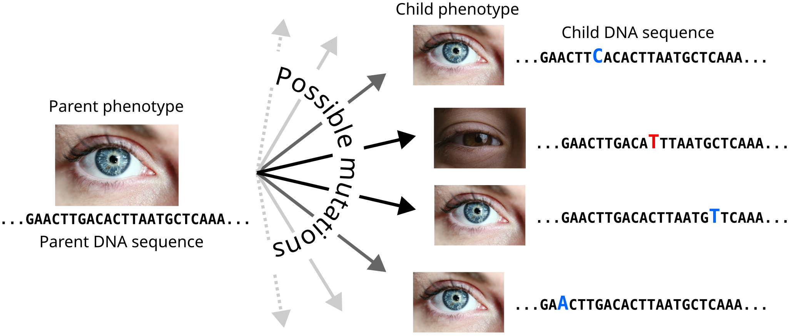
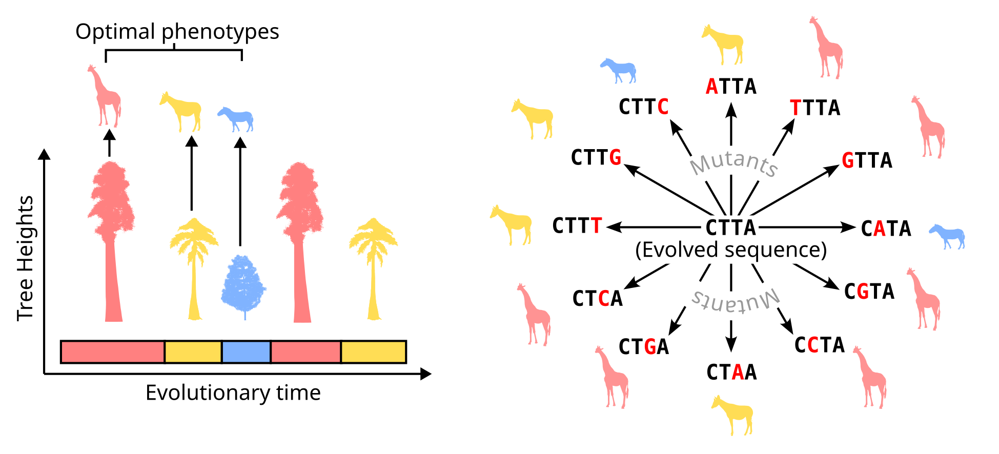
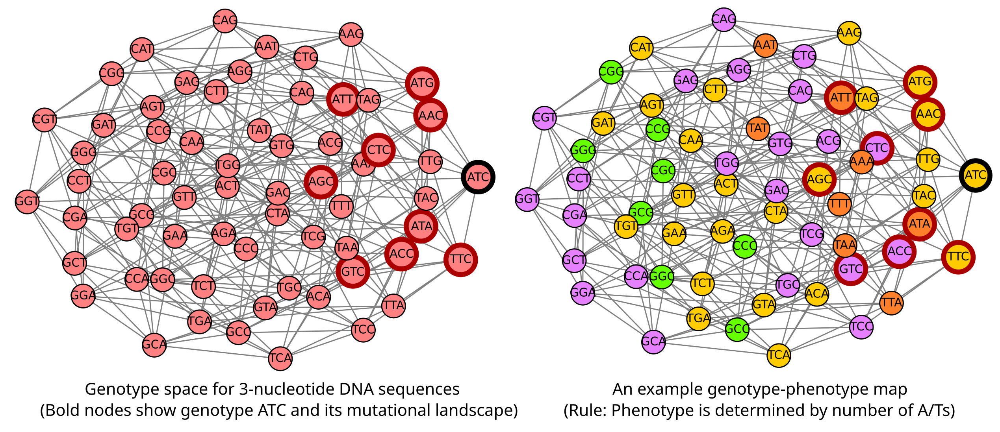
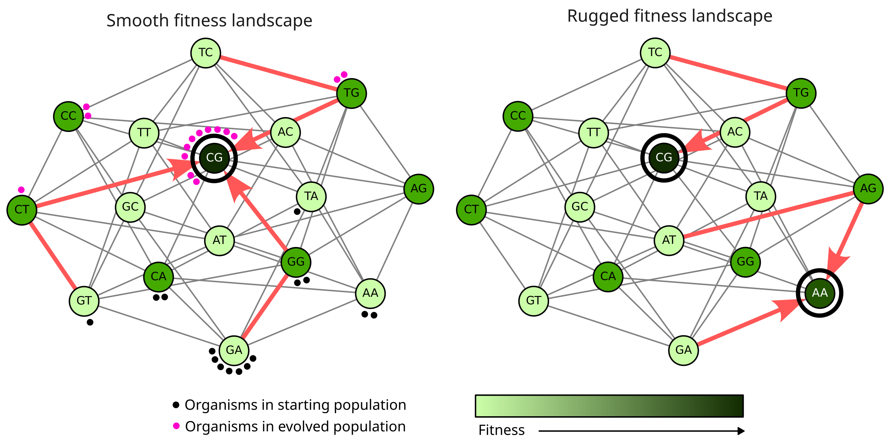
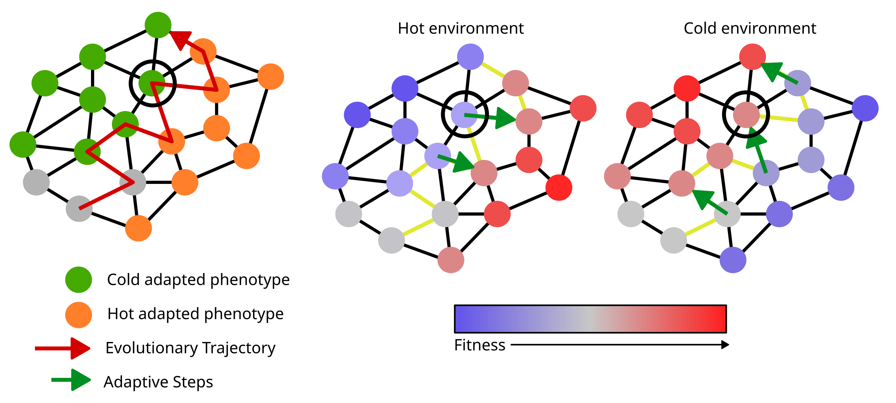

How evolution learns from a changing environment
Introduction
When Charles Darwin described evolution by natural selection, he pictured a process that makes the different features of organisms in a population well-suited (i.e. adapted) to their environment. In the last few decades, we have learned that nature rarely tweaks organisms through direct changes to these phenotypic characteristics. Rather, most evolutionary change occurs at the molecular level, through mutations in the DNA sequence as it is replicated from parent to offspring cells (Figure 1). Surprisingly, this partitioning of the evolutionary process between the DNA of an organism where all tiny changes occur, and the changes to visible traits that may arise as a result, is a fertile playground for evolution. Mutations frequently occur without any change to an organism’s phenotype (Kimura 1991). Sometimes, such “neutral” mutations may accumulate without incident and suddenly create a surprising change due to a mutation somewhere else in the genome (Paaby and Rockman 2014).

In our recent paper, we discover a remarkable role of such a two-level structure that becomes vital in a changing environment (Kumawat et al. 2025). The structure of the mutational landscape of an organism’s DNA—i.e., the set of DNA sequences that can be produced after mutation—can act as “recording tape” where evolution can store information about past environments (Figure 2). This, in turn, allows the organism to adapt quickly if such past environments occur again. Thus, under certain conditions, the process of mutation can get reconfigured by evolution in a way that makes adaptation more likely in constantly changing, but predictable environments. We also find that under these specific conditions the mutation rate can also increase through evolution, allowing more DNA changes per generation than usual. This increased mutation rate, when combined with the reconfigured mutational landscape, allows quicker adaptation to both new environments and environments the populations have encountered in the past, shaping the capacity for adaptation (or evolvability) of such organisms. In the following sections, I go over the details of the mechanism that shapes this evolution of evolvability, and how it can prove to be a useful tool for directed evolution in the lab.

DNA Genotype Spaces
To understand how this “learning” proceeds at the molecular level, one must understand the idea of a genotype space, which needs some understanding of DNA sequences. Thankfully, most of the chemical complexity can be ignored in this case by imagining DNA as a string of four possible “letters” called the nucleic acids—Adenine (A), Thymine (T), Glutamine (G), and Cytosine (C). In a cell, these nucleic acids form a long “strand” (sometimes contiguous and sometimes fragmented) called the organism’s genome. The exact sequence of nucleic acids that form the genome is called the genotype. The genome (and hence the genotype) primarily guides the production of proteins in the cell, and also performs regulatory functions, allowing cells to respond to changes in their environment. Changes to the genotype can lead to changes in the encoded proteins which sometimes manifests as a change in phenotype (Figure 1).
While an organism only has one specific genotype or DNA sequence, a large population can have a lot of different genotypes in it. Each genotype in a population is picked from a really expansive set of possibilities, consisting of all possible combinations of the four nucleotides. To visualize such a set, consider all genotypes that are 3 nucleotides long. If we connect those sequences in this set that are mutants of each other (like ATA and AAA are because interconverting between them only requires an A↔︎T conversion) by an edge, we get what is called a genotype space (Figure 3). We can take this image even further and “color” the genotypes based on their phenotype. This form of the genotype space, classified based on phenotypes, is usually called a genotype-phenotype map (Figure 3). Actual genotype spaces are, of course, much larger than those consisting of only 3 nucleotides. The human genome for example is \(3\times 10^9\) nucleotides long, which gives a genotype space with around \(10^{10^9}\) possibilities (by comparison the number of particles in the universe is close to \(10^{80}\))!

Considering these numbers, it is of course pretty difficult (if not impossible) to look at genotype spaces as a whole. Instead, evolutionary biologists tend to look at mutational landscapes of existing genotypes. When one talks of the mutational landscape, they are looking at a reduced version of the genotype space, considering only the mutations that can occur from one specific genotype. However, evolution really occurs on the much larger, essentially infinite genotype space. As populations move around the genotype space, the mutational landscape available to organisms also changes. This movement thus provides the flexibility required for evolution of evolvability. However, just knowing that this change is possible is not enough, we also need to understand how evolution actually leads to the appearance of mutation landscapes that seem to mimic the environments. For this, we need to figure out exactly how these populations move in the genotype space.
Evolution in the genotype space
The next piece of this puzzle is understanding how a population moves on a genotype space as evolution progresses. To understand this, we need to add the idea of fitness to the mix. Each genotype in the genotype space has a fitness that denotes the relative survival rate of this genotype compared to other genotypes. Thus, if an organism with genotype ATT has twice the fitness of one with genotype ACA, it is twice as likely to survive after a generation (or alternatively, creates twice as many children). From here, I’ll use the term fitness landscape to denote a genotype space where each genotype has a fitness value. Obviously, the fitness values are directly correlated with the phenotypes, as these phenotypes determine the actual ways in which the organism interacts with its environment. For example, if the environment is extremely warm, being heat resistant (the phenotype) is what determines fitness, and thus indirectly the genotype (the DNA sequence that encodes for heat-resistant proteins) does too.
So, how does a population move in the genotype space as it evolves? Firstly, at any point in time, the population is essentially a distribution over different genotypes in the genotype space. This can be visualized as a cloud of organisms that envelop the different nodes in the genotype network (the dots in Figure 4). There’s usually a dominant genotype which describes the DNA sequence that most of the organisms in the population have, and some surrounding genotypes that only a few organisms have. As evolution progresses, mutation and selection lead to a shift in the dominant genotype from lower to higher fitness nodes in the genotype space. Over thousands of generations of evolution, the entire population “cloud” essentially moves in the genotype space, finding better and better genotypes. This process, however, is somewhat short-sighted as the movement towards higher fitness genotypes can only happen if the genotype is already present at some low abundance in the population (or can be created through mutation). Thus, populations on real fitness landscapes have a tendency to get stuck on local fitness peaks in the landscape, even though a higher fitness genotype may exist somewhere else (Figure 4, right). The movement is also somewhat random because mutations are random and do not discriminate between genotypes. The directionality in the process is provided solely by changes in the dominant genotype that occur as a result of differences in the fitness of pre-existing genotypes that arise through random mutation.

Localization and evolvability
Now we know that the population (generally) moves from lower fitness to higher fitness genotypes as it evolves in the genotype space. How does this lead to evolvability in a changing environment? The last additional information we need for that is to realize that fitness landscapes are not static. When environments change, it also changes the fitness values of the genotypes in the genotype space. Thus, the genotypes that were in a “peak” earlier might end up in a “trough” of fitness in the new environment (Figure 5). Because this switching between the fitness landscapes is happening as the population evolves, the populations readjust their trajectory continuously as the environment changes. Random mutations add some stochasticity to the process as well.
Think of a drunk person walking towards their house from a pub with a general idea of the direction to go in, except every few minutes, the house magically moves to the exact opposite cardinal direction. Apart from being confusing, this would make the person perform a jittery zig-zag motion, trying to keep up with the changes in direction (Figure 5). If the rate of flipping is right, the person might just stay near the pub and never get back home! We basically applied the same idea to a population on a changing fitness landscape to describe how this localization leads to evolvability.
Let’s look at a simple genotype space where there are only two possible phenotypes, say heat-resistant and cold-resistant and the environment switches between hot and cold states. In the hot environment, the population is moving towards the heat-resistant genotypes. When the environment switches, the population flips direction and moves towards cold-resistant genotypes. Over time, this push and pull between the two phenotypes on the landscape localizes the population between the boundaries of these phenotypes on the genotype space (assuming such a boundary exists). This is where evolvability comes in! A genotype on the boundary is special in the sense that mutation from it can produce both heat- and cold-resistant phenotypes (Figure 5). Thus, this process of adapting to two environments creates a by-product and leads populations to such “evolvable” boundaries in the genotype space.

Implications for evolutionary biology
This process of localization is extremely interesting for multiple reasons. Firstly, it indicates that evolution does not require complex organismal machinery (like plasticity, where organisms can sense the environment) to adapt quicker. Instead, the two-level genotype-phenotype map structure (something that every population has access to) is sufficient for the process to self-optimize over time. Thus, in a way, evolution can be way more creative than we have previously assumed. Secondly, the dynamics of populations on genotype spaces is relatively underexplored, and may contain unexpected surprises once we start looking at the movement of these populations using rigorous theoretical tools. Unfortunately, while we have sufficient theoretical firepower in both the science of networks and in population genetics separately, we know little about how the population genetics operate on such large genotype spaces with heterogeneous structure. The work thus points towards a new area of study with exciting applications in the directed evolution of populations.
Broader Impact
Directed evolution, the practice of evolving populations in the lab, has been used as a tool for the generation of useful biological entities ranging from novel antibodies to multicellular yeast strains (Ratcliff et al. 2015; Miller, Wang, and Liu 2020). It relies primarily on natural selection, the process by which these entities are evolved to adapt to an artificial selective environment in a test tube. For example, selecting heavier clumps of yeast that sink to the bottom for propagation can create yeast cells that prefer to stay together as multicellular clusters. Our work shows that it is possible to go a step further and optimize second-level evolutionary properties through directed evolution—specifically, the ability of organisms to produce mutations faster and in a way that makes them biased towards certain historic environments. Thus, instead of optimizing antibodies to target a single antigen, it may be possible to design antibodies that can mutate to bind to diverse targets. Alternatively, it may be possible to design bacteriophages that can evolve rapidly and can treat multiple bacterial infections at once (something we aim to test in our next project). This multifaceted “evolution of evolvability” in a changing environment can be an incredible tool that shapes the next generation of applications of directed evolution.